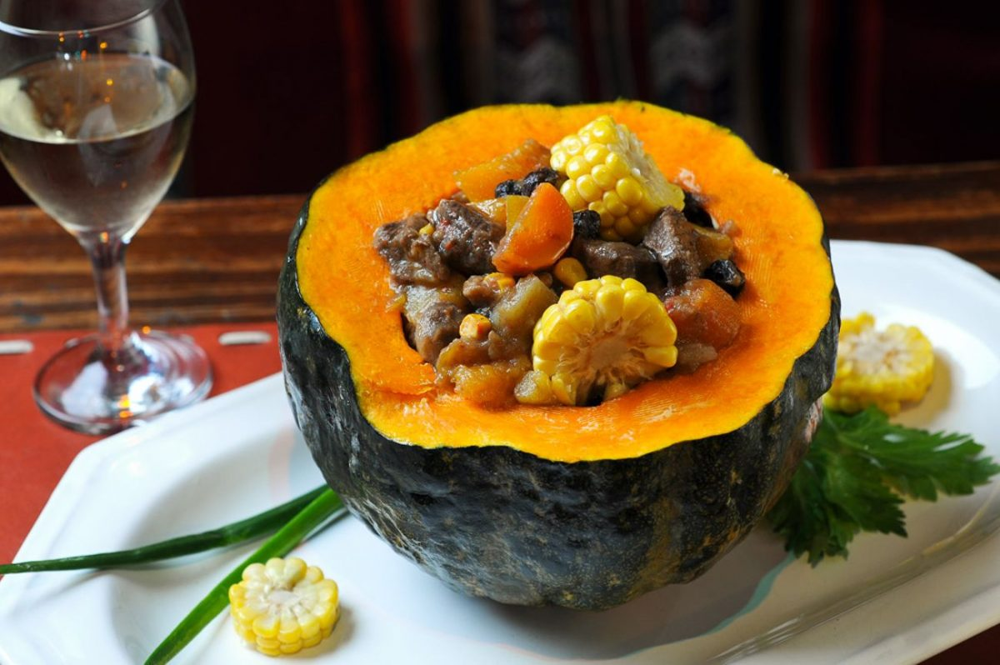

Comidas de Cuyo
La región de Cuyo está compuesta por las provincias de Mendoza, San Juan y San Luis. Esta región es muy popular por su gastronomía y todos aquellos que la visiten no pueden dejar de probar sus especialidades. Sus platos están caracterizados por ser variados y combinar diferentes sabores, que expresan en delicias varias la cultura tradicional y la influencia Europea.
